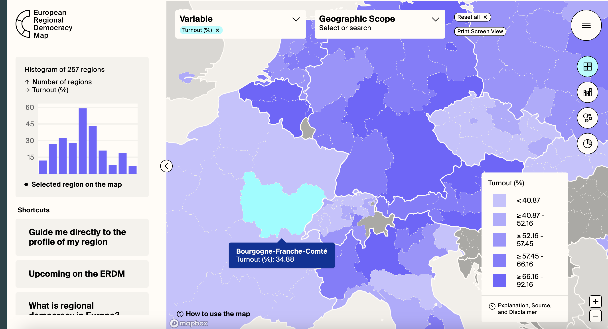
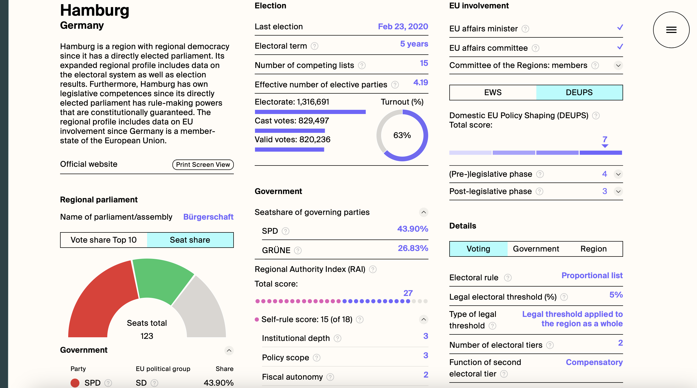

Research interests
My research is located at the intersection of political sociology and democratic theory: I study the transformation of political participation and representation in liberal democracies and its implications for the desirability and feasibility of institutional reforms. A political scientist and theorist by training, I have conducted extensive qualitative fieldwork in Europe and am currently involved in an ERC-funded mixed-methods project on the formation of political process preferences (PoPPiE).
Based on the main empirical and theoretical contributions of my doctoral project, I am working on different papers, some of which you can find below. I specialise in the comparative study of political participation and institutional design in Europe as well as EU studies, with a particular focus on the European Commission. Further research interests that connect to the main focus of my work include the study and formation of public opinion in (Western) Europe and mixed-methods, with a problem-driven approach to research design.
Publications
Simulating democratic reform in the EU: self-legitimation through participatory innovation, Journal of European Public Policy, 2025, DOI: 10.1080/13501763.2025.2554911
The European Commission has increasingly invested in forms of direct citizen engagement, recently establishing European Citizens’ Panels as part of its ‘new push for European Democracy’. While such processes have usually been explained as efforts at institutional legitimation, participatory innovations in the EU prove theoretically puzzling: Their strategic and functional value for the Commission remains elusive. This paper develops an alternative theoretical proposition: Rather than legitimating the Commission to an external audience, participatory innovation functions as a simulation of democratic reform that addresses a need for self-legitimation. The analysis demonstrates that participatory innovation can provide the means of self-legitimation precisely because it does not realise democratic participation but enacts a performance of democratic reform. This performance should be understood as a simulation of reform that is both produced by the Commission with a field of advocates, experts, and participation professionals, and designed primarily for this same field of actors. In this way, the instrumental value of participatory innovation lies in how it justifies the work and authority of the Commission to itself. The theoretical proposition is grounded in an empirical study that draws on document analysis of institutional discourse, data on affiliations between actors in the field, and elite interviews.
Keywords: legitimation; European Union; citizen engagement; democratic innovations; institutional reform; social theory
Work in progress
Politicising democratic innovations? Evidence on the divided public resonance of minipublics, Working paper
Abstract
— Working paper, emerging work presented at MPSA 2025
Democratic innovations such as deliberative mini-publics are promoted to revitalise democratic governance – for instance, by moderating partisan polarisation and rationalising public debate. Importantly, these promises depend on democratic innovations having a distinct public resonance: the wider citizenry, beyond the few citizens actually involved, is expected to evaluate such innovations as more legitimate than the status quo. We test this claim through a mixed-methods study in Western Europe. We first conduct group interviews (n=110) in Italy, Germany, and Ireland to understand how different groups of citizens make sense of the abstract institution of a minipublic. Based on these data, we develop three hypotheses about their public resonance. We propose that, first, there is a systematic divide between symbolic and politicised appraisals of democratic innovations – contrasting evaluative perspectives that are likely to produce divergent reactions under real-world political conditions. Second, the new ‘cultural’ cleavage in advanced democracies shapes respondents’ political understanding of democratic innovations. Third, these systematically different understandings are substantively conflicting – pertaining to incongruent normative expectations towards minipublics. To test these theoretical propositions, we will conduct a representative survey experiment. Using realistic vignettes, we will leverage open-ended survey questions and quantitative text analysis to investigate how groups on opposite sides of the political cleavage describe their understanding and expectations of democratic innovations.
Keywords: democratic innovation; politicisation; cleavage politics; political reasoning; mixed-methods
Innovating democracy for the worse? The promises of citizen participation in Europe, PhD thesis
Abstract
— Monograph, submitted in Sep. 2025 to the London School of Economics and Political Science
Citizens assemblies, participatory budgeting, or deliberative polls are democratic innovations: institutional procedures that should transform citizens participation in political decision making. These innovations, particularly those that bear on citizen deliberation, have been trialled by public organisations in many European countries, and attracted significant funding. The electoral success of authoritarian populism led to a wealth of scholarship on their promise to rejuvenate liberal democracy by means of institutional design. For many exponents of this paradigm, the question is how rather than if these innovations can contribute to counteracting the disenchantment with democracy in European societies and democratising policy making on salient issues such as climate change.
Through an analysis of three major promises of democratic innovation, this thesis argues that they may be innovating democracy for the worse. Rather than transcending political conflict, they become expressions of contemporary cleavage politics: competing understandings of citizen participation reproduce the very divisions innovations claim to resolve. Rather than reconnecting citizens with politics, they seem to embrace the social dislocation of democratic institutions. And rather than legitimating complex governance to and creating public acceptance, they seem to facilitate a simulation of democratic reform that serves to self-legitimate political institutional actors.
These arguments rest on two original empirical studies. Group interviews with 98 participants across Germany, Italy, and Ireland examine how citizens themselves make sense of democratic innovations when confronted with realistic portrayals of their operation. Through systematic comparison of groups with different political leanings and social class positions, the study reconstructs the perspectives through which participants interpret innovations and develops a typology distinguishing agents from spectators based on their proximity to democratic institutions. A second study uses the European Union as an instrumental case to examine how elites and institutions understand and utilise democratic innovations. Through elite interviews (n=44), document analysis, and network data on approximately 300 actors, it traces the discourse and interactions through which sponsors, advocates, experts, and professionals construct a simulation of democratic reform.
Keywords: European integration; democratic theory; legitimation; public opinion; democratic innovations
Projects
European Regional Democracy Map
As part of the Regioparl project (2020-22), Sarah Meyer, Mario Wolf, and I lead the design and implementation of the European Regional Democracy Map (ERDM), in a collaboration with Arjan Schakel. The ERDM was conceived as a hub for various kinds of information and data on the structures and political dynamics of regional democracy in Europe. Researchers can find, explore, and download a broad array of data on regional government, regional election results and governing coalitions across the continent, as well as regional involvement in EU affairs.

The interactive web application provides an accessible set of tools to compare and visualise data directly on the map, allowing policy analysts and non-experts to research basic information and explore the diversity of regional political institutions.
